Background
Relating to this previous post, I’ve been interested in the Model Context Protocol as a way to add tools and context provision to an AI efficiently. Enter gitmcp, which may be not quite what I had in mind, but close enough and worth looking at.
I want to trial this server via the continue.dev extension, from VSCode. There are instructions in the doc of gitmcp for setting it up in a variety of IDEs, but not continue.dev.
Finding the correct continue.dev settings
Continue.dev was an early adopter of the MCP, but the Continue.dev doc was rather confusing and inadequate regarding adding MCPs. In the end I second guessed JSON settings from json-reference#experimental and https://github.com/idosal/git-mcp?tab=readme-ov-file#connecting-claude-desktop.
The config.json settings that worked are:
"modelContextProtocolServers": [
{
"transport": {
"type": "stdio",
"command": "npx",
"args": [
"mcp-remote",
"https://gitmcp.io/csiro-hydroinformatics/swift-py-doc"
]
}
}
]Prior to finding the above settings on a hunch, I got lost looking for anything with the keyword MCP in the continue doc. It brought up pages like Add mcp tools and block-types#mcp-servers. That led to hub.continue.dev/explore/mcp which is shiny in appearance but rather opaque in what this is, and hard to reconcile with the VSCode extension. I don’t get what they are trying to do as a business model but the devX was disappointing and confusing.
The config.json settings seemed to register the correct tools:

Note that after a few minutes, I was about to try to use these tools, but noticed the tools had been lost (mcp server connection error). Needed to explicitly reload/refresh using the icon:
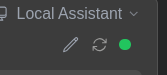
agent/how-it-works says that invoking tools in Chat mode does not work; one needs to work in the Agent mode for these gitmcp tools to be available.
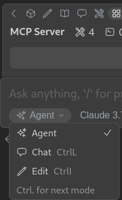
Indeed, and as opposed to the Chat mode, the IA does list the additional tools as available.
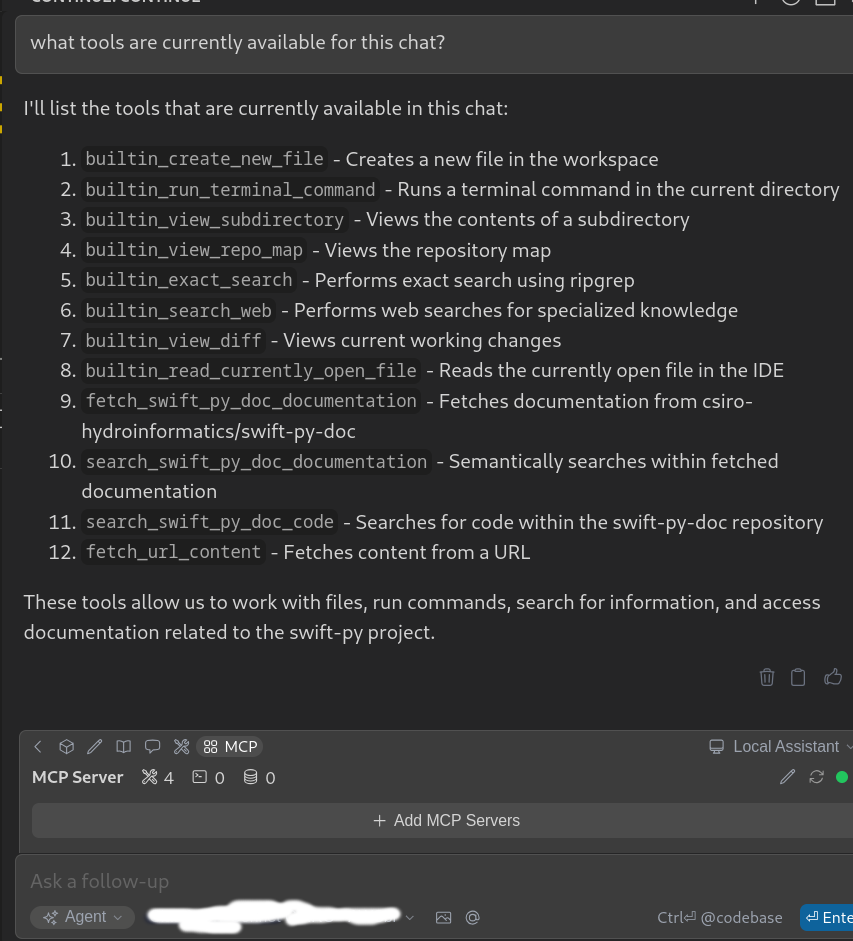
Give it a spin…
Let’s try to get a relevant bit of sample code for the codebase of interest, trying to get a canonical example for a hydrologic simulation.
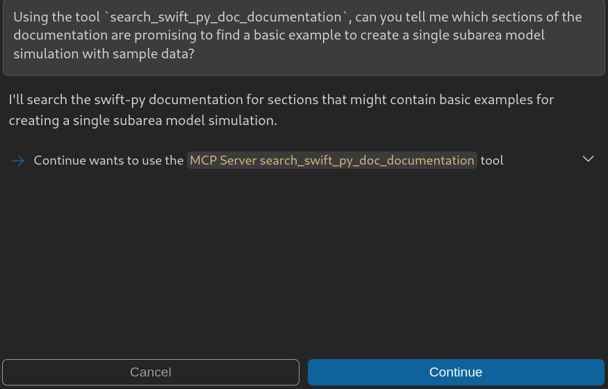
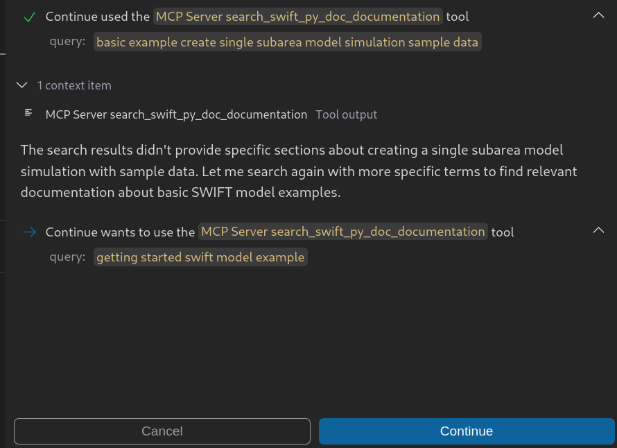
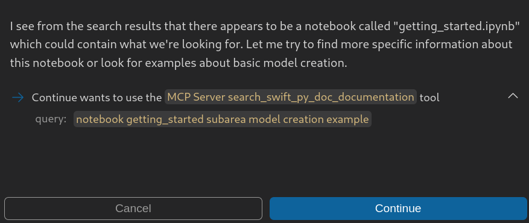
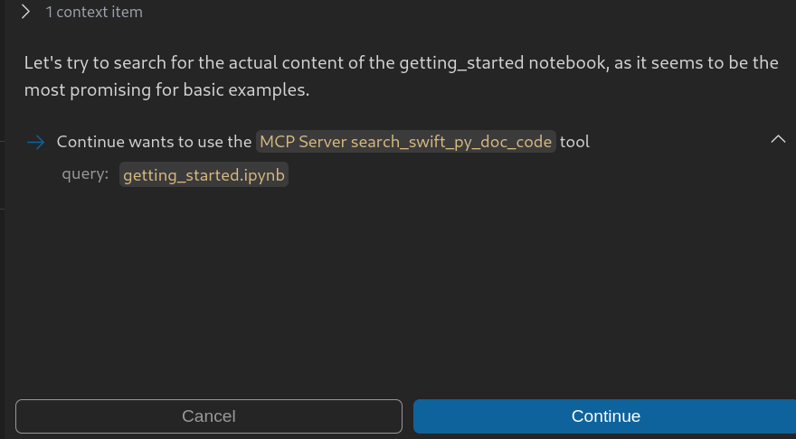
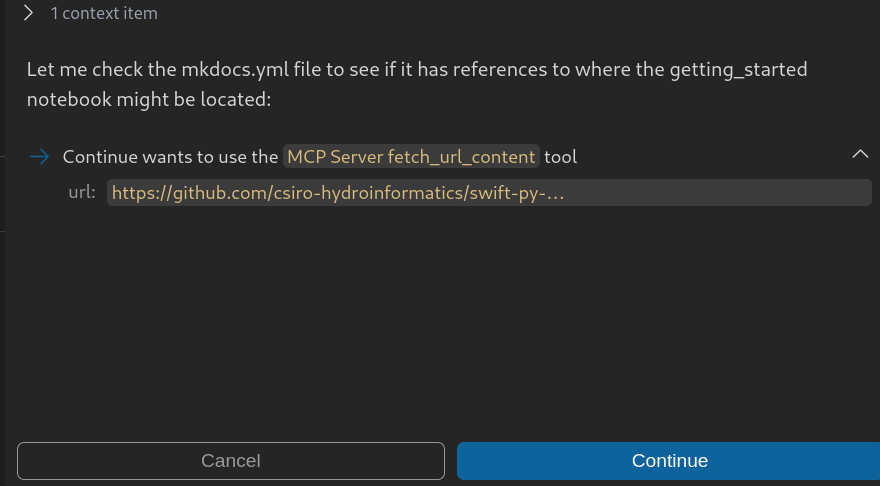
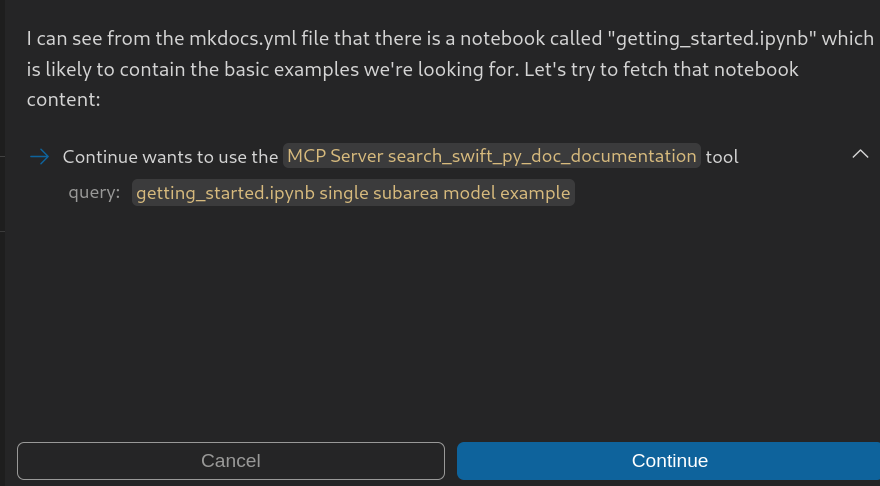
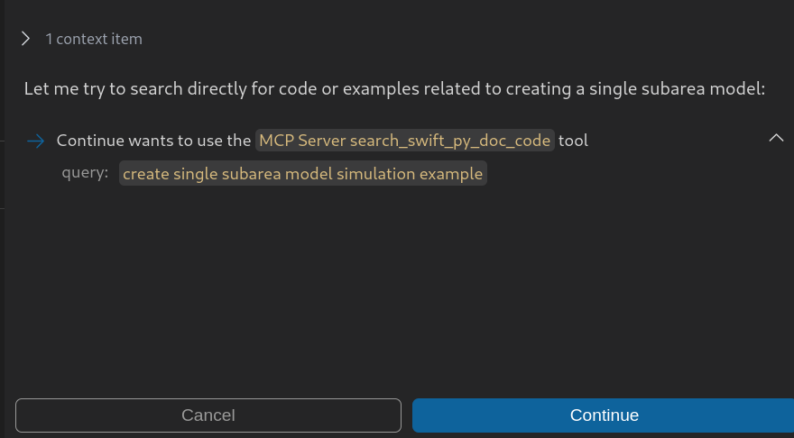
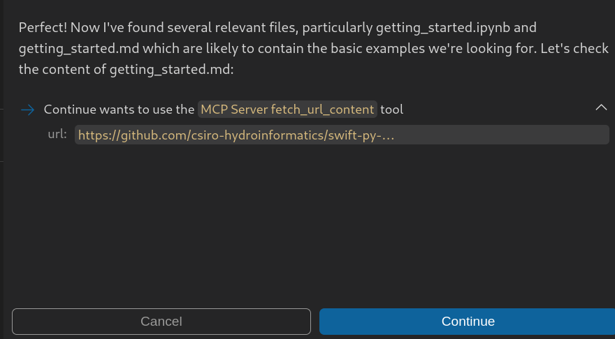
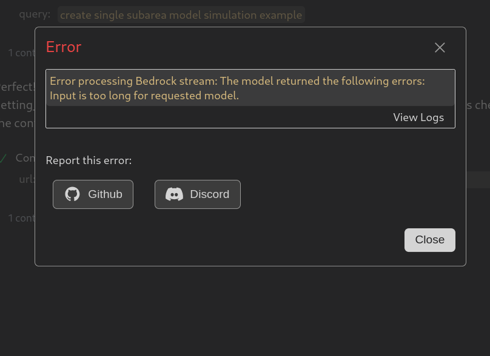
Stocktake
OK, on the good side, I found the recipe to set up an MCP server for continue.dev, at least a remote one. The trial of git-mcp did not pan out, again because of context length issues. So, there may still be a gap in the offering addressing my use case.
Progress, not perfection…
Other resources on MCP servers for APIs
Other resources to consider, gleaned from this tweet by @jeremyphoward. Some may be more relevant for my particular use case, or rather for the context engineering I envisaged in the first place.